Concerto
A terminal orchestrator for coding agents. You give it one request. It splits the work into scored user stories and sends each story to the model that fits it.

How a story is scored
A scorer model reads your request and writes user stories. Each story gets Fibonacci points (1, 2, 3, 5, 8 or 13), complexity, risk and value on a 1 to 5 scale, tags, and the stories it depends on.
Concerto then works out a difficulty score from 0 to 100 in code. No model is asked for it, so the same story always gets the same number.
score = 50% complexity
+ 30% risk
+ 20% points
each one scaled to 0..1 first
| Story | Builder | Reviewer |
|---|---|---|
| Tagged UI or UX, any score | Claude Opus 5.5 | GPT-6 Astra |
| Score 55 or higher | Claude Opus 5.5 | Critic, Claude Sonnet 5.5 |
| Score under 55 | GPT-6.1 Sol | Critic, Claude Sonnet 5.5 |
Stories that depend on nothing run in the same wave. If a builder's CLI is missing or fails, the story falls back to the same kind of model through pi.
Three backends, no API keys
Concerto starts other programs and reads what they print. Your logins stay with those programs. Concerto never reads, stores or sends a key.
-
Claude Code CLI
Your Claude subscription
Builds UI/UX stories and stories scored 55 and up with Claude Opus 5.5. Concerto starts it without your user settings, plugins or MCP servers, so a call opens with about 600 tokens of context instead of about 131,000.
-
Codex CLI
Your ChatGPT subscription
Builds stories scored under 55 with GPT-6.1 Sol. GPT-6 Astra reviews UI/UX work.
-
pi
Any API provider you log into
Anthropic, OpenAI, DeepSeek, Grok or a custom endpoint. It is the fallback for both CLIs, and it runs any model you add to the config by hand.
The conductor wakes three times
Claude Fable 5.2 is the conductor. It can read the whole session and has no tool that writes. It stays asleep while the builders work and is called at three fixed moments, each with one question.
Before a plan locks
What did the plan miss?
When an error repeats twice
Is this the root cause, or a rabbit hole?
Before calling it done
Did the diff break anything?
The cost panel in the terminal shows what the same tokens would have cost on the conductor model alone, next to what the run cost with the conductor used only as the brain.
Three layers of cache

Stable prefix
Each role's system prompt is the same bytes on every call: the Pelloux guidelines first, then the role brief, with no dates, paths or story text. The provider's prompt cache matches it each time.
Warm sessions
Each story keeps one session for its retries, and the conductor keeps one for the whole run. Later turns reuse the cached start of earlier ones.
Local response cache
Read-only calls, such as scoring, are saved on disk keyed on model, role, prompt file and prompt. Build calls change your files and are never cached.
0.9 s to score the same request a second time, down from 21 s, with 0 tokens used
~600 tokens of context when Claude Code starts, instead of ~131K with your user settings loaded
Install and run
You need Node 22 or newer, and at least one of claude, codex or pi on your PATH and logged in.
git clone https://github.com/RemiPelloux/Concerto
cd Concerto
npm install
npm run dev -- "Move the API to Rust. Done means: every test passes."Concerto's agents edit files in the directory you start it from. Run it in a git worktree or on a clean branch.
Flags
--plan- Print the scored stories as JSON and stop. Nothing is built.
--models- Show which model each role and each score range gets.
--yes- Skip the confirm step and start building after scoring.
--run- Score and build without the TUI, printing the log. For scripts and CI.
In the terminal
Enter scores the request and shows the stories. Enter again runs the plan, Esc throws it away. While a run is going, Esc stops it.
Change who does what
Routing lives in concerto.config.json at the root of the repository. routes picks the builder for a story and reviews picks who checks it. Each model is written as backend, slash, model id. A route lists models in order of preference and the first reachable one wins. A story with no review match goes to the critic role.
Run npm run dev -- --models after an edit to see the result.
{
"routes": [
{ "name": "ux-build", "tags": ["ui", "ux", "frontend"],
"role": "soloist", "effort": "high",
"models": ["claude-code/claude-opus-5-5", "anthropic/claude-opus-5-5"] },
{ "name": "complex-build", "minScore": 55,
"role": "soloist", "effort": "high",
"models": ["claude-code/claude-opus-5-5", "anthropic/claude-opus-5-5"] },
{ "name": "light-build",
"role": "section", "effort": "medium",
"models": ["codex/gpt-6.1-sol", "openai/gpt-6.1-sol"] }
],
"reviews": [
{ "tags": ["ui", "ux", "frontend"],
"models": ["codex/gpt-6-astra", "openai/gpt-6-astra"] }
]
}Held to its own rules
Pelloux Guidelines
Files up to 400 lines, functions up to 25, at most three parameters, no debug output. A pre-commit hook audits the staged files and CI audits the whole tree. Builders get the same guidelines at the top of their prompt.
SmartTest
Runs only the tests a change can affect, so a one-file edit does not wait on the full suite. Install it from npm as @tkmremi/smarttest.